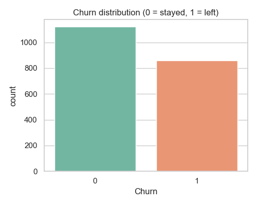
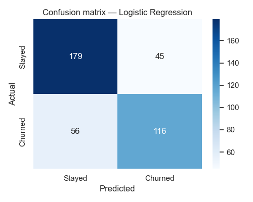
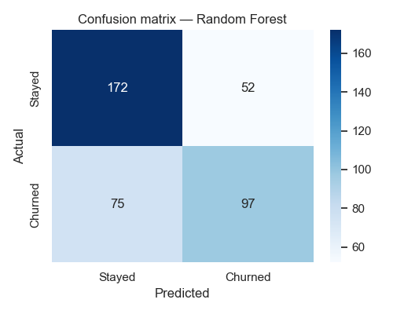

Built an end-to-end pipeline in Python to predict which telecom customers
are about to leave — exploratory analysis, feature engineering, two
classification models, and a clear set of business takeaways.
Telecom companies lose substantial revenue to customer churn — yet the
signals that predict who's about to leave are buried in everyday
account data. The goal here was to build a transparent pipeline that
identifies at-risk customers and surfaces the levers that influence
their decision to stay or go.
The Approach
The notebook walks through a standard ML workflow: data cleaning,
exploratory analysis, feature engineering (tenure buckets, average
monthly spend, one-hot encoding for categorical fields), then training
and comparing two classifiers — Logistic Regression and Random Forest —
on a held-out test set.
Exploratory Analysis
What the Data Showed

Churn is highly imbalanced. About 4 in 10 customers
churn — high enough to hurt revenue, but the dataset still skews
toward customers who stayed.
Early-tenure customers leave the most. Churn is
heaviest in the first ~10 months, then steadily drops. The first
year is the danger zone.
Contract type is the single biggest signal.
Month-to-month customers churn at 58%, vs. just 21% on two-year
contracts. Lock-in works.
Tenure protects, monthly charges hurt. Tenure is
negatively correlated with churn (-0.22), while higher monthly
charges push it up (+0.23).
Modeling
Two Models, Side by Side
After an 80/20 train/test split (1,584 training rows, 396 test rows) on
the cleaned dataset, both classifiers were fit on the same engineered
feature matrix and scored on the same held-out test set.
Model
Accuracy
Precision (Churn)
Recall (Churn)
F1 (Churn)
Logistic RegressionBest
74.5%
0.72
0.67
0.70
Random Forest
67.9%
0.65
0.56
0.60

Logistic Regression caught 116 of 172 churners
(recall 67%) — the better generalizer on this dataset.

Random Forest only caught 97 churners (recall 56%) —
likely overfitting noisy synthetic features.
Top Churn Drivers (from Random Forest)
MonthlyCharges0.147
tenure0.140
TotalCharges0.136
avg_monthly_spend0.136
Contract_Two year0.050
Contract_One year0.040
Bottom Line
In Plain English
1
Churn is real and big
About 4 out of 10 customers leave. That's a meaningful slice of revenue walking out the door each year.
2
The first months are the riskiest
Most churn happens in the first ~10 months. The longer a customer stays, the more likely they keep staying.
3
Contract length is the killer feature
Month-to-month: 58% churn. One-year: 30%. Two-year: 21%. Pushing customers into longer contracts has the largest single impact on retention.
4
Higher bills push customers out
Customers paying more each month are more likely to leave. Pricing, perceived value, and bill-shock all matter.
5
Simple beat complex
Logistic Regression (74.5%) outperformed Random Forest (67.9%) on this dataset — a reminder that more complexity doesn't always mean better generalization.
Want to dig into the code?
The full notebook, dataset generator, and outputs are on GitHub.